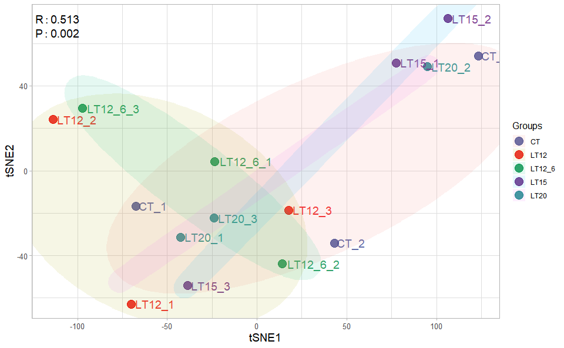
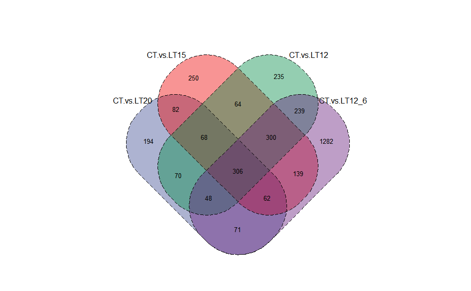
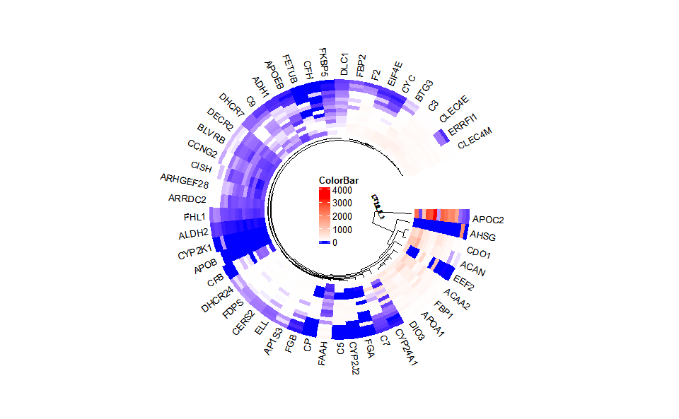
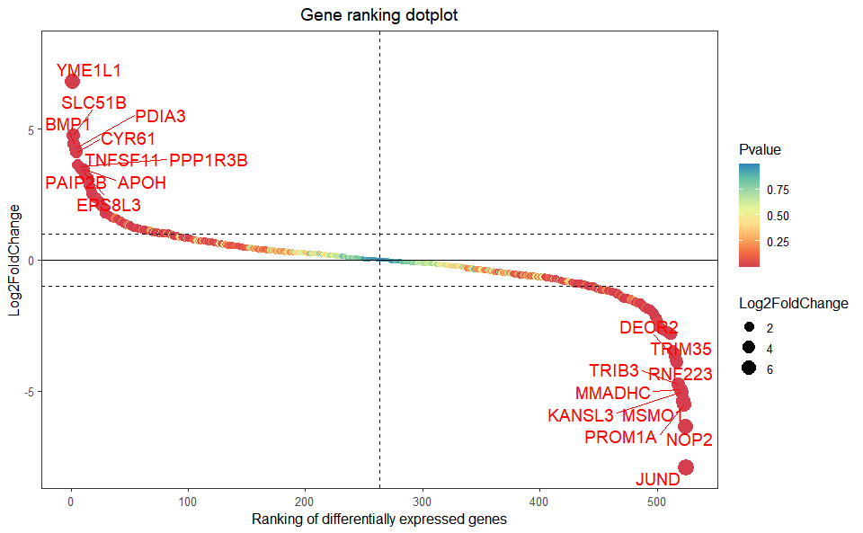
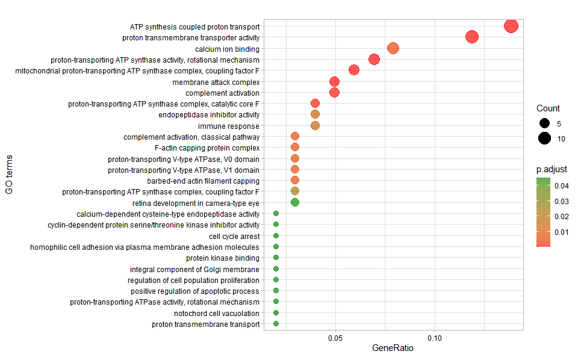

1. Introduction
TOmicsVis: TranscriptOmics Visualization.
Website: https://benben-miao.github.io/TOmicsVis/
1.1 TOmicsVis Shinyapp
1.1.1 Local start funcion:
# Start shiny application.
TOmicsVis::tomicsvis()
1.1.2 Online cloud platform: https://shiny.hiplot.cn/tomicsvis-shiny/
1.2 Github and CRAN Install
1.2.1 Install required packages from Bioconductor:
# Install required packages from Bioconductor
install.packages("BiocManager")
BiocManager::install(c("ComplexHeatmap", "EnhancedVolcano", "clusterProfiler", "enrichplot", "impute", "preprocessCore", "Mfuzz"))1.2.2 Github: https://github.com/benben-miao/TOmicsVis/
Install from Github:
install.packages("devtools")
devtools::install_github("benben-miao/TOmicsVis")
# Resolve network by GitClone
devtools::install_git("https://gitclone.com/github.com/benben-miao/TOmicsVis.git")1.2.3 CRAN: https://cran.r-project.org/package=TOmicsVis
Install from CRAN:
# Install from CRAN
install.packages("TOmicsVis")1.3 Articles and Courses
Videos Courses: https://space.bilibili.com/34105515/channel/series
Article Introduction: 全解TOmicsVis完美应用于转录组可视化R包
Article Courses: TOmicsVis 转录组学R代码分析及可视化视频
2. Libary packages
# 1. Library TOmicsVis package
library(TOmicsVis)
#> 载入需要的程辑包：Biobase
#> 载入需要的程辑包：BiocGenerics
#>
#> 载入程辑包：'BiocGenerics'
#> The following objects are masked from 'package:stats':
#>
#> IQR, mad, sd, var, xtabs
#> The following objects are masked from 'package:base':
#>
#> anyDuplicated, aperm, append, as.data.frame, basename, cbind,
#> colnames, dirname, do.call, duplicated, eval, evalq, Filter, Find,
#> get, grep, grepl, intersect, is.unsorted, lapply, Map, mapply,
#> match, mget, order, paste, pmax, pmax.int, pmin, pmin.int,
#> Position, rank, rbind, Reduce, rownames, sapply, setdiff, sort,
#> table, tapply, union, unique, unsplit, which.max, which.min
#> Welcome to Bioconductor
#>
#> Vignettes contain introductory material; view with
#> 'browseVignettes()'. To cite Bioconductor, see
#> 'citation("Biobase")', and for packages 'citation("pkgname")'.
#> 载入需要的程辑包：e1071
#>
#> Registered S3 method overwritten by 'GGally':
#> method from
#> +.gg ggplot2
#>
#> 载入程辑包：'DynDoc'
#> The following object is masked from 'package:BiocGenerics':
#>
#> path
# 2. Extra package
# install.packages("ggplot2")
library(ggplot2)3. Usage cases
3.1 Samples Statistics
3.1.1 quantile_plot
Input Data: Dataframe: Weight and Sex traits dataframe (1st-col: Weight, 2nd-col: Sex).
Output Plot: Quantile plot for visualizing data distribution.
# 1. Load example datasets
data(weight_sex)
head(weight_sex)
#> Weight Sex
#> 1 36.74 Female
#> 2 38.54 Female
#> 3 44.91 Female
#> 4 43.53 Female
#> 5 39.03 Female
#> 6 26.01 Female
# 2. Run quantile_plot plot function
quantile_plot(
data = weight_sex,
my_shape = "fill_circle",
point_size = 1.5,
conf_int = TRUE,
conf_level = 0.95,
split_panel = "Split_Panel",
legend_pos = "right",
legend_dir = "vertical",
sci_fill_color = "Sci_NPG",
sci_color_alpha = 0.75,
ggTheme = "theme_light"
)
Get help using command ?TOmicsVis::quantile_plot or reference page https://benben-miao.github.io/TOmicsVis/reference/quantile_plot.html.
# Get help with command in R console.
# ?TOmicsVis::quantile_plot3.1.2 box_plot
Input Data: Dataframe: Length, Width, Weight, and Sex traits dataframe (1st-col: Value, 2nd-col: Traits, 3rd-col: Sex).
Output Plot: Plot: Box plot support two levels and multiple groups with P value.
# 1. Load example datasets
data(traits_sex)
head(traits_sex)
#> Value Traits Sex
#> 1 36.74 Weight Female
#> 2 38.54 Weight Female
#> 3 44.91 Weight Female
#> 4 43.53 Weight Female
#> 5 39.03 Weight Female
#> 6 26.01 Weight Female
# 2. Run box_plot plot function
box_plot(
data = traits_sex,
test_method = "t.test",
test_label = "p.format",
notch = TRUE,
group_level = "Three_Column",
add_element = "jitter",
my_shape = "fill_circle",
sci_fill_color = "Sci_AAAS",
sci_fill_alpha = 0.5,
sci_color_alpha = 1,
legend_pos = "right",
legend_dir = "vertical",
ggTheme = "theme_light"
)
Get help using command ?TOmicsVis::box_plot or reference page https://benben-miao.github.io/TOmicsVis/reference/box_plot.html.
# Get help with command in R console.
# ?TOmicsVis::box_plot3.1.3 violin_plot
Input Data: Dataframe: Length, Width, Weight, and Sex traits dataframe (1st-col: Value, 2nd-col: Traits, 3rd-col: Sex).
Output Plot: Plot: Violin plot support two levels and multiple groups with P value.
# 1. Load example datasets
data(traits_sex)
# 2. Run violin_plot plot function
violin_plot(
data = traits_sex,
test_method = "t.test",
test_label = "p.format",
group_level = "Three_Column",
violin_orientation = "vertical",
add_element = "boxplot",
element_alpha = 0.5,
my_shape = "plus_times",
sci_fill_color = "Sci_AAAS",
sci_fill_alpha = 0.5,
sci_color_alpha = 1,
legend_pos = "right",
legend_dir = "vertical",
ggTheme = "theme_light"
)
Get help using command ?TOmicsVis::violin_plot or reference page https://benben-miao.github.io/TOmicsVis/reference/violin_plot.html.
# Get help with command in R console.
# ?TOmicsVis::violin_plot3.1.4 survival_plot
Input Data: Dataframe: survival record data (1st-col: Time, 2nd-col: Status, 3rd-col: Group).
Output Plot: Survival plot for analyzing and visualizing survival data.
# 1. Load example datasets
data(survival_data)
head(survival_data)
#> Time Status Group
#> 1 48 0 CT
#> 2 48 0 CT
#> 3 48 0 CT
#> 4 48 0 CT
#> 5 48 0 CT
#> 6 48 0 CT
# 2. Run survival_plot plot function
survival_plot(
data = survival_data,
curve_function = "pct",
conf_inter = TRUE,
interval_style = "ribbon",
risk_table = TRUE,
num_censor = TRUE,
sci_palette = "aaas",
ggTheme = "theme_light",
x_start = 0,
y_start = 0,
y_end = 100,
x_break = 10,
y_break = 10
)
Get help using command ?TOmicsVis::survival_plot or reference page https://benben-miao.github.io/TOmicsVis/reference/survival_plot.html.
# Get help with command in R console.
# ?TOmicsVis::survival_plot3.2 Traits Analysis
3.2.1 corr_heatmap
Input Data: Dataframe: All genes in all samples expression dataframe of RNA-Seq (1st-col: Genes, 2nd-col~: Samples).
Output Plot: Plot: heatmap plot filled with Pearson correlation values and P values.
# 1. Load example dataset
data(gene_expression)
head(gene_expression)
#> Genes CT_1 CT_2 CT_3 LT20_1 LT20_2 LT20_3 LT15_1 LT15_2
#> 1 transcript_0 655.78 631.08 669.89 654.21 402.56 447.09 510.08 442.22
#> 2 transcript_1 92.72 112.26 150.30 88.35 76.35 94.55 120.24 80.89
#> 3 transcript_10 21.74 31.11 22.58 15.09 13.67 13.24 12.48 7.53
#> 4 transcript_100 0.00 0.00 0.00 0.00 0.00 0.00 0.00 0.00
#> 5 transcript_1000 0.00 14.15 36.01 0.00 0.00 193.59 208.45 0.00
#> 6 transcript_10000 89.18 158.04 86.28 82.97 117.78 102.24 129.61 112.73
#> LT15_3 LT12_1 LT12_2 LT12_3 LT12_6_1 LT12_6_2 LT12_6_3
#> 1 399.82 483.30 437.89 444.06 405.43 416.63 464.75
#> 2 73.94 96.25 82.62 85.48 65.12 61.94 73.44
#> 3 13.35 11.16 11.36 6.96 7.82 4.01 10.02
#> 4 0.00 0.00 0.00 0.00 0.00 0.00 0.00
#> 5 232.40 148.58 0.00 181.61 0.02 12.18 0.00
#> 6 85.70 80.89 124.11 115.25 113.87 107.69 119.83
# 2. Run corr_heatmap plot function
corr_heatmap(
data = gene_expression,
corr_method = "pearson",
cell_shape = "square",
fill_type = "full",
lable_size = 3,
axis_angle = 45,
axis_size = 12,
lable_digits = 3,
color_low = "blue",
color_mid = "white",
color_high = "red",
outline_color = "white",
ggTheme = "theme_light"
)
#> Scale for fill is already present.
#> Adding another scale for fill, which will replace the existing scale.
Get help using command ?TOmicsVis::corr_heatmap or reference page https://benben-miao.github.io/TOmicsVis/reference/corr_heatmap.html.
# Get help with command in R console.
# ?TOmicsVis::corr_heatmap3.2.2 pca_analysis
Input Data1: Dataframe: All genes in all samples expression dataframe of RNA-Seq (1st-col: Genes, 2nd-col~: Samples).
Input Data2: Dataframe: Samples and groups for gene expression (1st-col: Samples, 2nd-col: Groups).
Output Table: PCA dimensional reduction analysis for RNA-Seq.
# 1. Load example datasets
data(gene_expression)
data(samples_groups)
head(samples_groups)
#> Samples Groups
#> 1 CT_1 CT
#> 2 CT_2 CT
#> 3 CT_3 CT
#> 4 LT20_1 LT20
#> 5 LT20_2 LT20
#> 6 LT20_3 LT20
# 2. Run pca_analysis plot function
res <- pca_analysis(gene_expression, samples_groups)
head(res)
#> PC1 PC2 PC3 PC4 PC5 PC6
#> CT_1 -27010.536 -18328.2803 5955.2569 46547.7319 11394.1043 -7197.285
#> CT_2 16248.651 29132.9251 -824.1857 20747.9618 -18798.8755 21096.088
#> CT_3 22421.017 -26832.3964 6789.4490 5864.1171 -15375.3418 17424.861
#> LT20_1 -18587.073 -472.9036 -21638.7836 7765.9575 114.1225 -3943.968
#> LT20_2 33275.933 -9874.9959 -14991.3942 -7443.9250 -4600.8302 -8072.298
#> LT20_3 -1596.255 11683.5426 -10892.8493 381.0795 11080.3560 -8994.187
#> PC7 PC8 PC9 PC10 PC11 PC12
#> CT_1 2150.6739 4850.320 4051.745 7666.9445 -3141.9327 -2487.939
#> CT_2 -12329.1138 -3353.734 4805.659 1503.8533 11184.0296 -4865.436
#> CT_3 12744.2255 -10037.516 -11468.842 202.4016 -11001.6260 -3847.291
#> LT20_1 8864.7482 -14171.127 -1968.082 -3562.1899 7446.2105 14831.486
#> LT20_2 -941.3943 -5072.401 5345.106 6494.1383 -3954.2153 9351.346
#> LT20_3 7263.9321 -7774.725 -1853.546 -21427.2641 -46.1503 -12507.011
#> PC13 PC14 PC15
#> CT_1 -2704.613 2396.7383 2.528517e-11
#> CT_2 -2633.057 -1375.3352 6.825657e-11
#> CT_3 5193.978 188.5601 2.255671e-11
#> LT20_1 3937.457 -7871.8062 4.864246e-11
#> LT20_2 -12904.673 6071.6618 -2.020696e-10
#> LT20_3 -5369.380 2606.1762 1.903509e-11Get help using command ?TOmicsVis::pca_analysis or reference page https://benben-miao.github.io/TOmicsVis/reference/pca_analysis.html.
# Get help with command in R console.
# ?TOmicsVis::pca_analysis3.2.3 pca_plot
Input Data1: Dataframe: All genes in all samples expression dataframe of RNA-Seq (1st-col: Genes, 2nd-col~: Samples).
Input Data2: Dataframe: Samples and groups for gene expression (1st-col: Samples, 2nd-col: Groups).
Output Plot: Plot: PCA dimensional reduction visualization for RNA-Seq.
# 1. Load example datasets
data(gene_expression)
data(samples_groups)
head(samples_groups)
#> Samples Groups
#> 1 CT_1 CT
#> 2 CT_2 CT
#> 3 CT_3 CT
#> 4 LT20_1 LT20
#> 5 LT20_2 LT20
#> 6 LT20_3 LT20
# 2. Run pca_plot plot function
pca_plot(
sample_gene = gene_expression,
group_sample = samples_groups,
xPC = 1,
yPC = 2,
point_size = 5,
text_size = 5,
fill_alpha = 0.10,
border_alpha = 0.00,
legend_pos = "right",
legend_dir = "vertical",
ggTheme = "theme_light"
)
Get help using command ?TOmicsVis::pca_plot or reference page https://benben-miao.github.io/TOmicsVis/reference/pca_plot.html.
# Get help with command in R console.
# ?TOmicsVis::pca_plot3.2.4 tsne_analysis
Input Data1: Dataframe: All genes in all samples expression dataframe of RNA-Seq (1st-col: Genes, 2nd-col~: Samples).
Input Data2: Dataframe: Samples and groups for gene expression (1st-col: Samples, 2nd-col: Groups).
Output Table: TSNE analysis for analyzing and visualizing TSNE algorithm.
# 1. Load example datasets
data(gene_expression)
data(samples_groups)
# 2. Run tsne_analysis plot function
res <- tsne_analysis(gene_expression, samples_groups)
head(res)
#> TSNE1 TSNE2
#> 1 -67.41252 -16.61397
#> 2 43.08349 -34.02654
#> 3 123.32273 54.14358
#> 4 -42.52065 -31.30027
#> 5 94.98790 48.97986
#> 6 -23.90637 -22.26434Get help using command ?TOmicsVis::tsne_analysis or reference page https://benben-miao.github.io/TOmicsVis/reference/tsne_analysis.html.
# Get help with command in R console.
# ?TOmicsVis::tsne_analysis3.2.5 tsne_plot
Input Data1: Dataframe: All genes in all samples expression dataframe of RNA-Seq (1st-col: Genes, 2nd-col~: Samples).
Input Data2: Dataframe: Samples and groups for gene expression (1st-col: Samples, 2nd-col: Groups).
Output Plot: TSNE plot for analyzing and visualizing TSNE algorithm.
# 1. Load example datasets
data(gene_expression)
data(samples_groups)
# 2. Run tsne_plot plot function
tsne_plot(
sample_gene = gene_expression,
group_sample = samples_groups,
seed = 1,
multi_shape = FALSE,
point_size = 5,
point_alpha = 0.8,
text_size = 5,
text_alpha = 0.80,
fill_alpha = 0.10,
border_alpha = 0.00,
sci_fill_color = "Sci_AAAS",
legend_pos = "right",
legend_dir = "vertical",
ggTheme = "theme_light"
)
Get help using command ?TOmicsVis::tsne_plot or reference page https://benben-miao.github.io/TOmicsVis/reference/tsne_plot.html.
# Get help with command in R console.
# ?TOmicsVis::tsne_plot3.2.6 umap_analysis
Input Data1: Dataframe: All genes in all samples expression dataframe of RNA-Seq (1st-col: Genes, 2nd-col~: Samples).
Input Data2: Dataframe: Samples and groups for gene expression (1st-col: Samples, 2nd-col: Groups).
Output Table: UMAP analysis for analyzing RNA-Seq data.
# 1. Load example datasets
data(gene_expression)
data(samples_groups)
# 2. Run tsne_plot plot function
res <- umap_analysis(gene_expression, samples_groups)
head(res)
#> UMAP1 UMAP2
#> CT_1 -0.6752746 0.49425898
#> CT_2 1.0232441 0.03062202
#> CT_3 -0.4722297 -1.32183550
#> LT20_1 -0.2414214 0.13870703
#> LT20_2 0.1991701 -1.23434000
#> LT20_3 0.6431577 1.11879669Get help using command ?TOmicsVis::umap_analysis or reference page https://benben-miao.github.io/TOmicsVis/reference/umap_analysis.html.
# Get help with command in R console.
# ?TOmicsVis::umap_analysis3.2.7 umap_plot
Input Data1: Dataframe: All genes in all samples expression dataframe of RNA-Seq (1st-col: Genes, 2nd-col~: Samples).
Input Data2: Dataframe: Samples and groups for gene expression (1st-col: Samples, 2nd-col: Groups).
Output Plot: UMAP plot for analyzing and visualizing UMAP algorithm.
# 1. Load example datasets
data(gene_expression)
data(samples_groups)
# 2. Run tsne_plot plot function
umap_plot(
sample_gene = gene_expression,
group_sample = samples_groups,
seed = 1,
multi_shape = TRUE,
point_size = 5,
point_alpha = 1,
text_size = 5,
text_alpha = 0.80,
fill_alpha = 0.00,
border_alpha = 0.00,
sci_fill_color = "Sci_AAAS",
legend_pos = "right",
legend_dir = "vertical",
ggTheme = "theme_light"
)
Get help using command ?TOmicsVis::umap_plot or reference page https://benben-miao.github.io/TOmicsVis/reference/umap_plot.html.
# Get help with command in R console.
# ?TOmicsVis::umap_plot3.2.8 dendro_plot
Input Data: Dataframe: All genes in all samples expression dataframe of RNA-Seq (1st-col: Genes, 2nd-col~: Samples).
Output Plot: Plot: dendrogram for multiple samples clustering.
# 1. Load example datasets
data(gene_expression)
# 2. Run plot function
dendro_plot(
data = gene_expression,
dist_method = "euclidean",
hc_method = "ward.D2",
tree_type = "rectangle",
k_num = 5,
palette = "npg",
color_labels_by_k = TRUE,
horiz = FALSE,
label_size = 1,
line_width = 1,
rect = TRUE,
rect_fill = TRUE,
xlab = "Samples",
ylab = "Height",
ggTheme = "theme_light"
)
#> Registered S3 method overwritten by 'dendextend':
#> method from
#> rev.hclust vegan
Get help using command ?TOmicsVis::dendro_plot or reference page https://benben-miao.github.io/TOmicsVis/reference/dendro_plot.html.
# Get help with command in R console.
# ?TOmicsVis::dendro_plot3.3 Differential Expression Analyais
3.3.1 venn_plot
Input Data2: Dataframe: Paired comparisons differentially expressed genes (degs) among groups (1st-col~: degs of paired comparisons).
Output Plot: Venn plot for stat common and unique gene among multiple sets.
# 1. Load example datasets
data(degs_lists)
head(degs_lists)
#> CT.vs.LT20 CT.vs.LT15 CT.vs.LT12 CT.vs.LT12_6
#> 1 transcript_9024 transcript_4738 transcript_9956 transcript_10354
#> 2 transcript_604 transcript_6050 transcript_7601 transcript_2959
#> 3 transcript_3912 transcript_1039 transcript_5960 transcript_5919
#> 4 transcript_8676 transcript_1344 transcript_3240 transcript_2395
#> 5 transcript_8832 transcript_3069 transcript_10224 transcript_9881
#> 6 transcript_74 transcript_9809 transcript_3151 transcript_8836
# 2. Run venn_plot plot function
venn_plot(
data = degs_lists,
title_size = 1,
label_show = TRUE,
label_size = 0.8,
border_show = TRUE,
line_type = "longdash",
ellipse_shape = "circle",
sci_fill_color = "Sci_AAAS",
sci_fill_alpha = 0.65
)
Get help using command ?TOmicsVis::venn_plot or reference page https://benben-miao.github.io/TOmicsVis/reference/venn_plot.html.
# Get help with command in R console.
# ?TOmicsVis::venn_plot3.3.2 upsetr_plot
Input Data2: Dataframe: Paired comparisons differentially expressed genes (degs) among groups (1st-col~: degs of paired comparisons).
Output Plot: UpSet plot for stat common and unique gene among multiple sets.
# 1. Load example datasets
data(degs_lists)
head(degs_lists)
#> CT.vs.LT20 CT.vs.LT15 CT.vs.LT12 CT.vs.LT12_6
#> 1 transcript_9024 transcript_4738 transcript_9956 transcript_10354
#> 2 transcript_604 transcript_6050 transcript_7601 transcript_2959
#> 3 transcript_3912 transcript_1039 transcript_5960 transcript_5919
#> 4 transcript_8676 transcript_1344 transcript_3240 transcript_2395
#> 5 transcript_8832 transcript_3069 transcript_10224 transcript_9881
#> 6 transcript_74 transcript_9809 transcript_3151 transcript_8836
# 2. Run upsetr_plot plot function
upsetr_plot(
data = degs_lists,
sets_num = 4,
keep_order = FALSE,
order_by = "freq",
decrease = TRUE,
mainbar_color = "#006600",
number_angle = 45,
matrix_color = "#cc0000",
point_size = 4.5,
point_alpha = 0.5,
line_size = 0.8,
shade_color = "#cdcdcd",
shade_alpha = 0.5,
setsbar_color = "#000066",
setsnum_size = 6,
text_scale = 1.2
)Get help using command ?TOmicsVis::upsetr_plot or reference page https://benben-miao.github.io/TOmicsVis/reference/upsetr_plot.html.
# Get help with command in R console.
# ?TOmicsVis::upsetr_plot3.3.3 flower_plot
Input Data2: Dataframe: Paired comparisons differentially expressed genes (degs) among groups (1st-col~: degs of paired comparisons).
Output Plot: Flower plot for stat common and unique gene among multiple sets.
# 1. Load example datasets
data(degs_lists)
# 2. Run plot function
flower_plot(
flower_dat = degs_lists,
angle = 90,
a = 1,
b = 2,
r = 1,
ellipse_col_pal = "Spectral",
circle_col = "white",
label_text_cex = 1
)Get help using command ?TOmicsVis::flower_plot or reference page https://benben-miao.github.io/TOmicsVis/reference/flower_plot.html.
# Get help with command in R console.
# ?TOmicsVis::flower_plot3.3.4 volcano_plot
Input Data2: Dataframe: All DEGs of paired comparison CT-vs-LT12 stats dataframe (1st-col: Genes, 2nd-col: log2FoldChange, 3rd-col: Pvalue, 4th-col: FDR).
Output Plot: Volcano plot for visualizing differentailly expressed genes.
# 1. Load example datasets
data(degs_stats)
head(degs_stats)
#> Gene log2FoldChange Pvalue FDR
#> 1 A1I3 -1.13855748 0.000111040 0.000862478
#> 2 A1M 0.59076131 0.070988041 0.192551708
#> 3 A2M 0.09297827 0.819706797 0.913893947
#> 4 A2ML1 -0.26940689 0.745374782 0.874295125
#> 5 ABAT 1.24811621 0.000001440 0.000016800
#> 6 ABCC3 -0.72947545 0.005171574 0.024228298
# 2. Run volcano_plot plot function
volcano_plot(
data = degs_stats,
title = "CT-vs-LT12",
log2fc_cutoff = 1,
pq_value = "pvalue",
pq_cutoff = 0.05,
cutoff_line = "longdash",
point_shape = "large_circle",
point_size = 2,
point_alpha = 0.5,
color_normal = "#888888",
color_log2fc = "#008000",
color_pvalue = "#0088ee",
color_Log2fc_p = "#ff0000",
label_size = 3,
boxed_labels = FALSE,
draw_connectors = FALSE,
legend_pos = "right"
)
Get help using command ?TOmicsVis::volcano_plot or reference page https://benben-miao.github.io/TOmicsVis/reference/volcano_plot.html.
# Get help with command in R console.
# ?TOmicsVis::volcano_plot3.3.5 ma_plot
Input Data2: Dataframe: All DEGs of paired comparison CT-vs-LT12 stats2 dataframe (1st-col: Gene, 2nd-col: baseMean, 3rd-col: Log2FoldChange, 4th-col: FDR).
Output Plot: MversusA plot for visualizing differentially expressed genes.
# 1. Load example datasets
data(degs_stats2)
head(degs_stats2)
#> name baseMean log2FoldChange padj
#> 1 A1I3 0.1184475 0.0000000 NA
#> 2 A1M 1654.4618140 0.6789538 5.280802e-02
#> 3 A2M 681.0463277 1.5263838 3.920000e-07
#> 4 A2ML1 389.7226640 3.8933573 1.180000e-14
#> 5 ABAT 364.7810090 -2.3554014 1.559230e-04
#> 6 ABCC3 1.1346239 1.2932740 4.491812e-01
# 2. Run volcano_plot plot function
ma_plot(
data = degs_stats2,
foldchange = 2,
fdr_value = 0.05,
point_size = 3.0,
color_up = "#FF0000",
color_down = "#008800",
color_alpha = 0.5,
top_method = "fc",
top_num = 20,
label_size = 8,
label_box = TRUE,
title = "CT-vs-LT12",
xlab = "Log2 mean expression",
ylab = "Log2 fold change",
ggTheme = "theme_light"
)
Get help using command ?TOmicsVis::ma_plot or reference page https://benben-miao.github.io/TOmicsVis/reference/ma_plot.html.
# Get help with command in R console.
# ?TOmicsVis::ma_plot3.3.6 heatmap_group
Input Data1: Dataframe: Shared DEGs of all paired comparisons in all samples expression dataframe of RNA-Seq. (1st-col: Genes, 2nd-col~: Samples).
Input Data2: Dataframe: Samples and groups for gene expression (1st-col: Samples, 2nd-col: Groups).
Output Plot: Heatmap group for visualizing grouped gene expression data.
# 1. Load example datasets
data(gene_expression2)
data(samples_groups)
# 2. Run heatmap_group plot function
heatmap_group(
sample_gene = gene_expression2[1:30,],
group_sample = samples_groups,
scale_data = "row",
clust_method = "complete",
border_show = TRUE,
border_color = "#ffffff",
value_show = TRUE,
value_decimal = 2,
value_size = 5,
axis_size = 8,
cell_height = 10,
low_color = "#00880055",
mid_color = "#ffffff",
high_color = "#ff000055",
na_color = "#ff8800",
x_angle = 45
)
Get help using command ?TOmicsVis::heatmap_group or reference page https://benben-miao.github.io/TOmicsVis/reference/heatmap_group.html.
# Get help with command in R console.
# ?TOmicsVis::heatmap_group3.3.7 circos_heatmap
Input Data2: Dataframe: Shared DEGs of all paired comparisons in all samples expression dataframe of RNA-Seq. (1st-col: Genes, 2nd-col~: Samples).
Output Plot: Circos heatmap plot for visualizing gene expressing in multiple samples.
# 1. Load example datasets
data(gene_expression2)
head(gene_expression2)
#> Genes CT_1 CT_2 CT_3 LT20_1 LT20_2 LT20_3 LT15_1 LT15_2 LT15_3 LT12_1
#> 1 ACAA2 24.50 39.83 55.38 114.11 159.32 96.88 169.56 464.84 182.66 116.08
#> 2 ACAN 14.97 18.71 10.30 71.23 142.67 213.54 253.15 320.80 104.15 174.02
#> 3 ADH1 1.54 1.56 2.04 14.95 13.60 15.87 12.80 17.74 6.06 10.97
#> 4 AHSG 0.00 1911.99 0.00 0.00 0.00 0.00 0.00 0.00 0.00 0.00
#> 5 ALDH2 2.07 2.86 2.54 0.85 0.49 0.47 0.42 0.13 0.26 0.00
#> 6 AP1S3 6.62 14.59 9.30 24.90 33.94 23.19 24.00 36.08 27.40 24.06
#> LT12_2 LT12_3 LT12_6_1 LT12_6_2 LT12_6_3
#> 1 497.29 464.48 471.43 693.62 229.77
#> 2 305.81 469.48 1291.90 991.90 966.77
#> 3 10.71 30.95 9.84 10.91 7.28
#> 4 0.00 0.00 0.00 0.00 0.00
#> 5 0.28 0.11 0.37 0.15 0.11
#> 6 38.74 34.54 62.72 41.36 28.75
# 2. Run circos_heatmap plot function
circos_heatmap(
data = gene_expression2[1:50,],
low_color = "#0000ff",
mid_color = "#ffffff",
high_color = "#ff0000",
gap_size = 25,
cluster_run = TRUE,
cluster_method = "complete",
distance_method = "euclidean",
dend_show = "inside",
dend_height = 0.2,
track_height = 0.3,
rowname_show = "outside",
rowname_size = 0.8
)
#> Note: 15 points are out of plotting region in sector 'group', track
#> '3'.
#> Note: 15 points are out of plotting region in sector 'group', track
#> '3'.
Get help using command ?TOmicsVis::circos_heatmap or reference page https://benben-miao.github.io/TOmicsVis/reference/circos_heatmap.html.
# Get help with command in R console.
# ?TOmicsVis::circos_heatmap3.3.8 chord_plot
Input Data2: Dataframe: Shared DEGs of all paired comparisons in all samples expression dataframe of RNA-Seq. (1st-col: Genes, 2nd-col~: Samples).
Output Plot: Chord plot for visualizing the relationships of pathways and genes.
# 1. Load chord_data example datasets
data(gene_expression2)
head(gene_expression2)
#> Genes CT_1 CT_2 CT_3 LT20_1 LT20_2 LT20_3 LT15_1 LT15_2 LT15_3 LT12_1
#> 1 ACAA2 24.50 39.83 55.38 114.11 159.32 96.88 169.56 464.84 182.66 116.08
#> 2 ACAN 14.97 18.71 10.30 71.23 142.67 213.54 253.15 320.80 104.15 174.02
#> 3 ADH1 1.54 1.56 2.04 14.95 13.60 15.87 12.80 17.74 6.06 10.97
#> 4 AHSG 0.00 1911.99 0.00 0.00 0.00 0.00 0.00 0.00 0.00 0.00
#> 5 ALDH2 2.07 2.86 2.54 0.85 0.49 0.47 0.42 0.13 0.26 0.00
#> 6 AP1S3 6.62 14.59 9.30 24.90 33.94 23.19 24.00 36.08 27.40 24.06
#> LT12_2 LT12_3 LT12_6_1 LT12_6_2 LT12_6_3
#> 1 497.29 464.48 471.43 693.62 229.77
#> 2 305.81 469.48 1291.90 991.90 966.77
#> 3 10.71 30.95 9.84 10.91 7.28
#> 4 0.00 0.00 0.00 0.00 0.00
#> 5 0.28 0.11 0.37 0.15 0.11
#> 6 38.74 34.54 62.72 41.36 28.75
# 2. Run chord_plot plot function
chord_plot(
data = gene_expression2[1:30,],
multi_colors = "VividColors",
color_seed = 10,
color_alpha = 0.3,
link_visible = TRUE,
link_dir = -1,
link_type = "diffHeight",
sector_scale = "Origin",
width_circle = 3,
dist_name = 3,
label_dir = "Vertical",
dist_label = 0.3,
label_scale = 0.8
)
#> rn cn value1 value2 o1 o2 x1 x2 col
#> 1 ACAA2 CT_1 24.50 24.50 15 30 3779.75 394.66 #89A2E4B2
#> 2 ACAN CT_1 14.97 14.97 15 29 5349.40 370.16 #E5B07FB2
#> 3 ADH1 CT_1 1.54 1.54 15 28 166.82 355.19 #CB6280B2
#> 4 AHSG CT_1 0.00 0.00 15 27 1911.99 353.65 #DEBD62B2
#> 5 ALDH2 CT_1 2.07 2.07 15 26 11.11 353.65 #56CCD8B2
#> 6 AP1S3 CT_1 6.62 6.62 15 25 430.19 351.58 #6ABA8AB2Get help using command ?TOmicsVis::chord_plot or reference page https://benben-miao.github.io/TOmicsVis/reference/chord_plot.html.
# Get help with command in R console.
# ?TOmicsVis::chord_plot3.4 Advanced Analysis
3.4.1 gene_rank_plot
Input Data: Dataframe: All DEGs of paired comparison CT-vs-LT12 stats dataframe (1st-col: Genes, 2nd-col: log2FoldChange, 3rd-col: Pvalue, 4th-col: FDR).
Output Plot: Gene cluster trend plot for visualizing gene expression trend profile in multiple samples.
# 1. Load example datasets
data(degs_stats)
# 2. Run plot function
gene_rank_plot(
data = degs_stats,
log2fc = 1,
palette = "Spectral",
top_n = 10,
genes_to_label = NULL,
label_size = 5,
base_size = 12,
title = "Gene ranking dotplot",
xlab = "Ranking of differentially expressed genes",
ylab = "Log2FoldChange"
)
Get help using command ?TOmicsVis::gene_rank_plot or reference page https://benben-miao.github.io/TOmicsVis/reference/gene_rank_plot.html.
# Get help with command in R console.
# ?TOmicsVis::gene_rank_plot3.4.2 gene_cluster_trend
Input Data2: Dataframe: Shared DEGs of all paired comparisons in all groups expression dataframe of RNA-Seq. (1st-col: Genes, 2nd-col~n-1-col: Groups, n-col: Pathways).
Output Plot: Gene cluster trend plot for visualizing gene expression trend profile in multiple samples.
# 1. Load example datasets
data(gene_expression3)
# 2. Run plot function
gene_cluster_trend(
data = gene_expression3[,-7],
thres = 0.25,
min_std = 0.2,
palette = "PiYG",
cluster_num = 4
)
#> 0 genes excluded.
#> 0 genes excluded.
Get help using command ?TOmicsVis::gene_cluster_trend or reference page https://benben-miao.github.io/TOmicsVis/reference/gene_cluster_trend.html.
# Get help with command in R console.
# ?TOmicsVis::gene_cluster_trend3.4.3 trend_plot
Input Data2: Dataframe: Shared DEGs of all paired comparisons in all groups expression dataframe of RNA-Seq. (1st-col: Genes, 2nd-col~n-1-col: Groups, n-col: Pathways).
Output Plot: Trend plot for visualizing gene expression trend profile in multiple traits.
# 1. Load example datasets
data(gene_expression3)
head(gene_expression3)
#> Genes CT LT20 LT15 LT12 LT12_6
#> 1 ACAA2 39.903333 123.4366667 272.3533 359.28333 464.940000
#> 2 ACAN 14.660000 142.4800000 226.0333 316.43667 1083.523333
#> 3 ADH1 1.713333 14.8066667 12.2000 17.54333 9.343333
#> 4 AHSG 637.330000 0.0000000 0.0000 0.00000 0.000000
#> 5 ALDH2 2.490000 0.6033333 0.2700 0.13000 0.210000
#> 6 AP1S3 10.170000 27.3433333 29.1600 32.44667 44.276667
#> Pathways
#> 1 PPAR signaling pathway
#> 2 PPAR signaling pathway
#> 3 PPAR signaling pathway
#> 4 PPAR signaling pathway
#> 5 PPAR signaling pathway
#> 6 PPAR signaling pathway
# 2. Run trend_plot plot function
trend_plot(
data = gene_expression3[1:100,],
scale_method = "centerObs",
miss_value = "exclude",
line_alpha = 0.5,
show_points = TRUE,
show_boxplot = TRUE,
num_column = 1,
xlab = "Traits",
ylab = "Genes Expression",
sci_fill_color = "Sci_AAAS",
sci_fill_alpha = 0.8,
sci_color_alpha = 0.8,
legend_pos = "right",
legend_dir = "vertical",
ggTheme = "theme_light"
)
Get help using command ?TOmicsVis::trend_plot or reference page https://benben-miao.github.io/TOmicsVis/reference/trend_plot.html.
# Get help with command in R console.
# ?TOmicsVis::trend_plot3.4.4 wgcna_pipeline
Input Data1: Dataframe: All genes in all samples expression dataframe of RNA-Seq (1st-col: Genes, 2nd-col~: Samples).
Input Data2: Dataframe: Samples and groups for gene expression (1st-col: Samples, 2nd-col: Groups).
Output Plot: WGCNA analysis pipeline for RNA-Seq.
# 1. Load wgcna_pipeline example datasets
data(gene_expression)
head(gene_expression)
#> Genes CT_1 CT_2 CT_3 LT20_1 LT20_2 LT20_3 LT15_1 LT15_2
#> 1 transcript_0 655.78 631.08 669.89 654.21 402.56 447.09 510.08 442.22
#> 2 transcript_1 92.72 112.26 150.30 88.35 76.35 94.55 120.24 80.89
#> 3 transcript_10 21.74 31.11 22.58 15.09 13.67 13.24 12.48 7.53
#> 4 transcript_100 0.00 0.00 0.00 0.00 0.00 0.00 0.00 0.00
#> 5 transcript_1000 0.00 14.15 36.01 0.00 0.00 193.59 208.45 0.00
#> 6 transcript_10000 89.18 158.04 86.28 82.97 117.78 102.24 129.61 112.73
#> LT15_3 LT12_1 LT12_2 LT12_3 LT12_6_1 LT12_6_2 LT12_6_3
#> 1 399.82 483.30 437.89 444.06 405.43 416.63 464.75
#> 2 73.94 96.25 82.62 85.48 65.12 61.94 73.44
#> 3 13.35 11.16 11.36 6.96 7.82 4.01 10.02
#> 4 0.00 0.00 0.00 0.00 0.00 0.00 0.00
#> 5 232.40 148.58 0.00 181.61 0.02 12.18 0.00
#> 6 85.70 80.89 124.11 115.25 113.87 107.69 119.83
data(samples_groups)
head(samples_groups)
#> Samples Groups
#> 1 CT_1 CT
#> 2 CT_2 CT
#> 3 CT_3 CT
#> 4 LT20_1 LT20
#> 5 LT20_2 LT20
#> 6 LT20_3 LT20
# 2. Run wgcna_pipeline plot function
# wgcna_pipeline(gene_expression[1:3000,], samples_groups)Get help using command ?TOmicsVis::wgcna_pipeline or reference page https://benben-miao.github.io/TOmicsVis/reference/wgcna_pipeline.html.
# Get help with command in R console.
# ?TOmicsVis::wgcna_pipeline3.4.5 network_plot
Input Data: Dataframe: Network data from WGCNA tan module top-200 dataframe (1st-col: Source, 2nd-col: Target).
Output Plot: Network plot for analyzing and visualizing relationship of genes.
# 1. Load example datasets
data(network_data)
head(network_data)
#> Source Target
#> 1 Cebpd Cebpd
#> 2 CYR61 Cebpd
#> 3 Cebpd CDKN1B
#> 4 CYR61 CDKN1B
#> 5 junb Cebpd
#> 6 IGFBP1 Cebpd
# 2. Run network_plot plot function
network_plot(
data = network_data,
calc_by = "degree",
degree_value = 0.5,
normal_color = "#008888cc",
border_color = "#FFFFFF",
from_color = "#FF0000cc",
to_color = "#008800cc",
normal_shape = "circle",
spatial_shape = "circle",
node_size = 25,
lable_color = "#FFFFFF",
label_size = 0.5,
edge_color = "#888888",
edge_width = 1.5,
edge_curved = TRUE,
net_layout = "layout_on_sphere"
)
Get help using command ?TOmicsVis::network_plot or reference page https://benben-miao.github.io/TOmicsVis/reference/network_plot.html.
# Get help with command in R console.
# ?TOmicsVis::network_plot3.4.6 heatmap_cluster
Input Data: Dataframe: Shared DEGs of all paired comparisons in all samples expression dataframe of RNA-Seq. (1st-col: Genes, 2nd-col~: Samples).
Output Plot: Heatmap cluster plot for visualizing clustered gene expression data.
# 1. Load example datasets
data(gene_expression2)
head(gene_expression2)
#> Genes CT_1 CT_2 CT_3 LT20_1 LT20_2 LT20_3 LT15_1 LT15_2 LT15_3 LT12_1
#> 1 ACAA2 24.50 39.83 55.38 114.11 159.32 96.88 169.56 464.84 182.66 116.08
#> 2 ACAN 14.97 18.71 10.30 71.23 142.67 213.54 253.15 320.80 104.15 174.02
#> 3 ADH1 1.54 1.56 2.04 14.95 13.60 15.87 12.80 17.74 6.06 10.97
#> 4 AHSG 0.00 1911.99 0.00 0.00 0.00 0.00 0.00 0.00 0.00 0.00
#> 5 ALDH2 2.07 2.86 2.54 0.85 0.49 0.47 0.42 0.13 0.26 0.00
#> 6 AP1S3 6.62 14.59 9.30 24.90 33.94 23.19 24.00 36.08 27.40 24.06
#> LT12_2 LT12_3 LT12_6_1 LT12_6_2 LT12_6_3
#> 1 497.29 464.48 471.43 693.62 229.77
#> 2 305.81 469.48 1291.90 991.90 966.77
#> 3 10.71 30.95 9.84 10.91 7.28
#> 4 0.00 0.00 0.00 0.00 0.00
#> 5 0.28 0.11 0.37 0.15 0.11
#> 6 38.74 34.54 62.72 41.36 28.75
# 2. Run network_plot plot function
heatmap_cluster(
data = gene_expression2,
dist_method = "euclidean",
hc_method = "average",
k_num = 5,
show_rownames = FALSE,
palette = "RdBu",
cluster_pal = "Set1",
border_color = "#ffffff",
angle_col = 45,
label_size = 10,
base_size = 12,
line_color = "#0000cd",
line_alpha = 0.2,
summary_color = "#0000cd",
summary_alpha = 0.8
)


Get help using command ?TOmicsVis::heatmap_cluster or reference page https://benben-miao.github.io/TOmicsVis/reference/heatmap_cluster.html.
# Get help with command in R console.
# ?TOmicsVis::heatmap_cluster3.5 GO and KEGG Enrichment
3.5.1 go_enrich
Input Data: Dataframe: GO and KEGG annotation of background genes (1st-col: Genes, 2nd-col: biological_process, 3rd-col: cellular_component, 4th-col: molecular_function, 5th-col: kegg_pathway).
Output Table: GO enrichment analysis based on GO annotation results (None/Exist Reference Genome).
# 1. Load example datasets
data(gene_go_kegg)
head(gene_go_kegg)
#> Genes
#> 1 FN1
#> 2 14-3-3ZETA
#> 3 A1I3
#> 4 A2M
#> 5 AARS
#> 6 ABAT
#> biological_process
#> 1 GO:0003181(atrioventricular valve morphogenesis);GO:0003128(heart field specification);GO:0001756(somitogenesis)
#> 2 <NA>
#> 3 <NA>
#> 4 <NA>
#> 5 GO:0006419(alanyl-tRNA aminoacylation)
#> 6 GO:0009448(gamma-aminobutyric acid metabolic process)
#> cellular_component
#> 1 GO:0005576(extracellular region)
#> 2 <NA>
#> 3 GO:0005615(extracellular space)
#> 4 GO:0005615(extracellular space)
#> 5 GO:0005737(cytoplasm)
#> 6 <NA>
#> molecular_function
#> 1 <NA>
#> 2 GO:0019904(protein domain specific binding)
#> 3 GO:0004866(endopeptidase inhibitor activity)
#> 4 GO:0004866(endopeptidase inhibitor activity)
#> 5 GO:0004813(alanine-tRNA ligase activity);GO:0005524(ATP binding);GO:0000049(tRNA binding);GO:0008270(zinc ion binding)
#> 6 GO:0003867(4-aminobutyrate transaminase activity);GO:0030170(pyridoxal phosphate binding)
#> kegg_pathway
#> 1 ko04810(Regulation of actin cytoskeleton);ko04510(Focal adhesion);ko04151(PI3K-Akt signaling pathway);ko04512(ECM-receptor interaction)
#> 2 ko04110(Cell cycle);ko04114(Oocyte meiosis);ko04390(Hippo signaling pathway);ko04391(Hippo signaling pathway -fly);ko04013(MAPK signaling pathway - fly);ko04151(PI3K-Akt signaling pathway);ko04212(Longevity regulating pathway - worm)
#> 3 ko04610(Complement and coagulation cascades)
#> 4 ko04610(Complement and coagulation cascades)
#> 5 ko00970(Aminoacyl-tRNA biosynthesis)
#> 6 ko00250(Alanine, aspartate and glutamate metabolism);ko00280(Valine, leucine and isoleucine degradation);ko00650(Butanoate metabolism);ko00640(Propanoate metabolism);ko00410(beta-Alanine metabolism);ko04727(GABAergic synapse)
# 2. Run go_enrich analysis function
res <- go_enrich(
go_anno = gene_go_kegg[,-5],
degs_list = gene_go_kegg[100:200,1],
padjust_method = "fdr",
pvalue_cutoff = 0.05,
qvalue_cutoff = 0.05
)
head(res)
#> ID ontology
#> 1 GO:0000221 cellular component
#> 2 GO:0000275 cellular component
#> 3 GO:0000276 cellular component
#> 4 GO:0000398 biological process
#> 5 GO:0000774 molecular function
#> 6 GO:0001671 molecular function
#> Description
#> 1 vacuolar proton-transporting V-type ATPase, V1 domain
#> 2 mitochondrial proton-transporting ATP synthase complex, catalytic core F
#> 3 mitochondrial proton-transporting ATP synthase complex, coupling factor F
#> 4 mRNA splicing, via spliceosome
#> 5 adenyl-nucleotide exchange factor activity
#> 6 ATPase activator activity
#> GeneRatio BgRatio pvalue p.adjust qvalue
#> 1 1/101 1/1279 7.896794e-02 1.110997e-01 9.458955e-02
#> 2 1/101 1/1279 7.896794e-02 1.110997e-01 9.458955e-02
#> 3 6/101 6/1279 2.109128e-07 1.075656e-05 9.158058e-06
#> 4 1/101 14/1279 6.858207e-01 7.363549e-01 6.269275e-01
#> 5 1/101 1/1279 7.896794e-02 1.110997e-01 9.458955e-02
#> 6 1/101 1/1279 7.896794e-02 1.110997e-01 9.458955e-02
#> geneID Count
#> 1 ATP6V1H 1
#> 2 ATP5F1E 1
#> 3 ATP5MC1/ATP5ME/ATP5MG/ATP5PB/ATP5PD/ATP5PF 6
#> 4 CDC40 1
#> 5 BAG2 1
#> 6 ATP1B1 1Get help using command ?TOmicsVis::go_enrich or reference page https://benben-miao.github.io/TOmicsVis/reference/go_enrich.html.
# Get help with command in R console.
# ?TOmicsVis::go_enrich3.5.2 go_enrich_stat
Input Data: Dataframe: GO and KEGG annotation of background genes (1st-col: Genes, 2nd-col: biological_process, 3rd-col: cellular_component, 4th-col: molecular_function, 5th-col: kegg_pathway).
Output Plot: GO enrichment analysis and stat plot (None/Exist Reference Genome).
# 1. Load example datasets
data(gene_go_kegg)
# 2. Run go_enrich_stat analysis function
go_enrich_stat(
go_anno = gene_go_kegg[,-5],
degs_list = gene_go_kegg[100:200,1],
padjust_method = "fdr",
pvalue_cutoff = 0.05,
qvalue_cutoff = 0.05,
max_go_item = 15,
strip_fill = "#CDCDCD",
xtext_angle = 45,
sci_fill_color = "Sci_AAAS",
sci_fill_alpha = 0.8,
ggTheme = "theme_light"
)
Get help using command ?TOmicsVis::go_enrich_stat or reference page https://benben-miao.github.io/TOmicsVis/reference/go_enrich_stat.html.
# Get help with command in R console.
# ?TOmicsVis::go_enrich_stat3.5.3 go_enrich_bar
Input Data: Dataframe: GO and KEGG annotation of background genes (1st-col: Genes, 2nd-col: biological_process, 3rd-col: cellular_component, 4th-col: molecular_function, 5th-col: kegg_pathway).
Output Plot: GO enrichment analysis and bar plot (None/Exist Reference Genome).
# 1. Load example datasets
data(gene_go_kegg)
# 2. Run go_enrich_bar analysis function
go_enrich_bar(
go_anno = gene_go_kegg[,-5],
degs_list = gene_go_kegg[100:200,1],
padjust_method = "fdr",
pvalue_cutoff = 0.05,
qvalue_cutoff = 0.05,
sign_by = "p.adjust",
category_num = 30,
font_size = 12,
low_color = "#ff0000aa",
high_color = "#008800aa",
ggTheme = "theme_light"
)
#> Scale for fill is already present.
#> Adding another scale for fill, which will replace the existing scale.
Get help using command ?TOmicsVis::go_enrich_bar or reference page https://benben-miao.github.io/TOmicsVis/reference/go_enrich_bar.html.
# Get help with command in R console.
# ?TOmicsVis::go_enrich_bar3.5.4 go_enrich_dot
Input Data: Dataframe: GO and KEGG annotation of background genes (1st-col: Genes, 2nd-col: biological_process, 3rd-col: cellular_component, 4th-col: molecular_function, 5th-col: kegg_pathway).
Output Plot: GO enrichment analysis and dot plot (None/Exist Reference Genome).
# 1. Load example datasets
data(gene_go_kegg)
# 2. Run go_enrich_dot analysis function
go_enrich_dot(
go_anno = gene_go_kegg[,-5],
degs_list = gene_go_kegg[100:200,1],
padjust_method = "fdr",
pvalue_cutoff = 0.05,
qvalue_cutoff = 0.05,
sign_by = "p.adjust",
category_num = 30,
font_size = 12,
low_color = "#ff0000aa",
high_color = "#008800aa",
ggTheme = "theme_light"
)
#> Scale for colour is already present.
#> Adding another scale for colour, which will replace the existing scale.
Get help using command ?TOmicsVis::go_enrich_dot or reference page https://benben-miao.github.io/TOmicsVis/reference/go_enrich_dot.html.
# Get help with command in R console.
# ?TOmicsVis::go_enrich_dot3.5.5 go_enrich_net
Input Data: Dataframe: GO and KEGG annotation of background genes (1st-col: Genes, 2nd-col: biological_process, 3rd-col: cellular_component, 4th-col: molecular_function, 5th-col: kegg_pathway).
Output Plot: GO enrichment analysis and net plot (None/Exist Reference Genome).
# 1. Load example datasets
data(gene_go_kegg)
# 2. Run go_enrich_net analysis function
go_enrich_net(
go_anno = gene_go_kegg[,-5],
degs_list = gene_go_kegg[100:200,1],
padjust_method = "fdr",
pvalue_cutoff = 0.05,
qvalue_cutoff = 0.05,
category_num = 20,
net_layout = "circle",
net_circular = TRUE,
low_color = "#ff0000aa",
high_color = "#008800aa"
)
Get help using command ?TOmicsVis::go_enrich_net or reference page https://benben-miao.github.io/TOmicsVis/reference/go_enrich_net.html.
# Get help with command in R console.
# ?TOmicsVis::go_enrich_net3.5.6 kegg_enrich
Input Data: Dataframe: GO and KEGG annotation of background genes (1st-col: Genes, 2nd-col: biological_process, 3rd-col: cellular_component, 4th-col: molecular_function, 5th-col: kegg_pathway).
Output Plot: GO enrichment analysis based on GO annotation results (None/Exist Reference Genome).
# 1. Load example datasets
data(gene_go_kegg)
head(gene_go_kegg)
#> Genes
#> 1 FN1
#> 2 14-3-3ZETA
#> 3 A1I3
#> 4 A2M
#> 5 AARS
#> 6 ABAT
#> biological_process
#> 1 GO:0003181(atrioventricular valve morphogenesis);GO:0003128(heart field specification);GO:0001756(somitogenesis)
#> 2 <NA>
#> 3 <NA>
#> 4 <NA>
#> 5 GO:0006419(alanyl-tRNA aminoacylation)
#> 6 GO:0009448(gamma-aminobutyric acid metabolic process)
#> cellular_component
#> 1 GO:0005576(extracellular region)
#> 2 <NA>
#> 3 GO:0005615(extracellular space)
#> 4 GO:0005615(extracellular space)
#> 5 GO:0005737(cytoplasm)
#> 6 <NA>
#> molecular_function
#> 1 <NA>
#> 2 GO:0019904(protein domain specific binding)
#> 3 GO:0004866(endopeptidase inhibitor activity)
#> 4 GO:0004866(endopeptidase inhibitor activity)
#> 5 GO:0004813(alanine-tRNA ligase activity);GO:0005524(ATP binding);GO:0000049(tRNA binding);GO:0008270(zinc ion binding)
#> 6 GO:0003867(4-aminobutyrate transaminase activity);GO:0030170(pyridoxal phosphate binding)
#> kegg_pathway
#> 1 ko04810(Regulation of actin cytoskeleton);ko04510(Focal adhesion);ko04151(PI3K-Akt signaling pathway);ko04512(ECM-receptor interaction)
#> 2 ko04110(Cell cycle);ko04114(Oocyte meiosis);ko04390(Hippo signaling pathway);ko04391(Hippo signaling pathway -fly);ko04013(MAPK signaling pathway - fly);ko04151(PI3K-Akt signaling pathway);ko04212(Longevity regulating pathway - worm)
#> 3 ko04610(Complement and coagulation cascades)
#> 4 ko04610(Complement and coagulation cascades)
#> 5 ko00970(Aminoacyl-tRNA biosynthesis)
#> 6 ko00250(Alanine, aspartate and glutamate metabolism);ko00280(Valine, leucine and isoleucine degradation);ko00650(Butanoate metabolism);ko00640(Propanoate metabolism);ko00410(beta-Alanine metabolism);ko04727(GABAergic synapse)
# 2. Run go_enrich analysis function
res <- kegg_enrich(
kegg_anno = gene_go_kegg[,c(1,5)],
degs_list = gene_go_kegg[100:200,1],
padjust_method = "fdr",
pvalue_cutoff = 0.05,
qvalue_cutoff = 0.05
)
head(res)
#> ID Description GeneRatio BgRatio
#> ko04966 ko04966 Collecting duct acid secretion 7/101 7/1279
#> ko00190 ko00190 Oxidative phosphorylation 23/101 88/1279
#> ko04721 ko04721 Synaptic vesicle cycle 8/101 13/1279
#> ko04610 ko04610 Complement and coagulation cascades 13/101 43/1279
#> ko04145 ko04145 Phagosome 11/101 33/1279
#> ko04971 ko04971 Gastric acid secretion 4/101 4/1279
#> pvalue p.adjust qvalue
#> ko04966 1.573976e-08 2.030430e-06 1.723090e-06
#> ko00190 5.232645e-08 3.375056e-06 2.864185e-06
#> ko04721 1.069634e-06 4.599427e-05 3.903227e-05
#> ko04610 1.078094e-05 3.476853e-04 2.950573e-04
#> ko04145 1.941460e-05 5.008968e-04 4.250776e-04
#> ko04971 3.679084e-05 7.910030e-04 6.712714e-04
#> geneID
#> ko04966 ATP6V0C/ATP6V0E1/ATP6V1B2/ATP6V1C1A/ATP6V1F/ATP6V1G1/CA1
#> ko00190 ATP5F1A/ATP5F1B/ATP5F1C/ATP5F1D/ATP5F1E/ATP5MC1/ATP5MC2/ATP5MC3/ATP5ME/ATP5MF/ATP5MG/ATP5PB/ATP5PD/ATP5PF/ATP5PO/ATP6V0B/ATP6V0C/ATP6V0E1/ATP6V1B2/ATP6V1C1A/ATP6V1F/ATP6V1G1/ATP6V1H
#> ko04721 ATP6V0B/ATP6V0C/ATP6V0E1/ATP6V1B2/ATP6V1C1A/ATP6V1F/ATP6V1G1/ATP6V1H
#> ko04610 C1QC/C1S/C3/C4/C4A/C5/C6/C7/C8A/C8B/C8G/C9/CD59
#> ko04145 ATP6V0B/ATP6V0C/ATP6V0E1/ATP6V1B2/ATP6V1C1A/ATP6V1F/ATP6V1G1/ATP6V1H/C3/CALR/CANX
#> ko04971 ATP1B1/CA1/CALM1/CAMK2D
#> Count
#> ko04966 7
#> ko00190 23
#> ko04721 8
#> ko04610 13
#> ko04145 11
#> ko04971 4Get help using command ?TOmicsVis::kegg_enrich or reference page https://benben-miao.github.io/TOmicsVis/reference/kegg_enrich.html.
# Get help with command in R console.
# ?TOmicsVis::kegg_enrich3.5.7 kegg_enrich_bar
Input Data: Dataframe: GO and KEGG annotation of background genes (1st-col: Genes, 2nd-col: biological_process, 3rd-col: cellular_component, 4th-col: molecular_function, 5th-col: kegg_pathway).
Output Plot: KEGG enrichment analysis and bar plot (None/Exist Reference Genome).
# 1. Load example datasets
data(gene_go_kegg)
# 2. Run kegg_enrich_bar analysis function
kegg_enrich_bar(
kegg_anno = gene_go_kegg[,c(1,5)],
degs_list = gene_go_kegg[100:200,1],
padjust_method = "fdr",
pvalue_cutoff = 0.05,
qvalue_cutoff = 0.05,
sign_by = "p.adjust",
category_num = 30,
font_size = 12,
low_color = "#ff0000aa",
high_color = "#008800aa",
ggTheme = "theme_light"
)
#> Scale for fill is already present.
#> Adding another scale for fill, which will replace the existing scale.
Get help using command ?TOmicsVis::kegg_enrich_bar or reference page https://benben-miao.github.io/TOmicsVis/reference/kegg_enrich_bar.html.
# Get help with command in R console.
# ?TOmicsVis::kegg_enrich_bar3.5.8 kegg_enrich_dot
Input Data: Dataframe: GO and KEGG annotation of background genes (1st-col: Genes, 2nd-col: biological_process, 3rd-col: cellular_component, 4th-col: molecular_function, 5th-col: kegg_pathway).
Output Plot: KEGG enrichment analysis and dot plot (None/Exist Reference Genome).
# 1. Load example datasets
data(gene_go_kegg)
# 2. Run kegg_enrich_dot analysis function
kegg_enrich_dot(
kegg_anno = gene_go_kegg[,c(1,5)],
degs_list = gene_go_kegg[100:200,1],
padjust_method = "fdr",
pvalue_cutoff = 0.05,
qvalue_cutoff = 0.05,
sign_by = "p.adjust",
category_num = 30,
font_size = 12,
low_color = "#ff0000aa",
high_color = "#008800aa",
ggTheme = "theme_light"
)
#> Scale for colour is already present.
#> Adding another scale for colour, which will replace the existing scale.
Get help using command ?TOmicsVis::kegg_enrich_dot or reference page https://benben-miao.github.io/TOmicsVis/reference/kegg_enrich_dot.html.
# Get help with command in R console.
# ?TOmicsVis::kegg_enrich_dot3.5.9 kegg_enrich_net
Input Data: Dataframe: GO and KEGG annotation of background genes (1st-col: Genes, 2nd-col: biological_process, 3rd-col: cellular_component, 4th-col: molecular_function, 5th-col: kegg_pathway).
Output Plot: KEGG enrichment analysis and net plot (None/Exist Reference Genome).
# 1. Load example datasets
data(gene_go_kegg)
# 2. Run kegg_enrich_net analysis function
kegg_enrich_net(
kegg_anno = gene_go_kegg[,c(1,5)],
degs_list = gene_go_kegg[100:200,1],
padjust_method = "fdr",
pvalue_cutoff = 0.05,
qvalue_cutoff = 0.05,
category_num = 20,
net_layout = "circle",
net_circular = TRUE,
low_color = "#ff0000aa",
high_color = "#008800aa"
)
Get help using command ?TOmicsVis::kegg_enrich_net or reference page https://benben-miao.github.io/TOmicsVis/reference/kegg_enrich_net.html.
# Get help with command in R console.
# ?TOmicsVis::kegg_enrich_net3.6 Tables Operations
3.6.1 table_split
Input Data: Dataframe: GO and KEGG annotation of background genes (1st-col: Genes, 2nd-col: biological_process, 3rd-col: cellular_component, 4th-col: molecular_function, 5th-col: kegg_pathway).
Output Table: Table split used for splitting a grouped column to multiple columns.
# 1. Load example datasets
data(gene_go_kegg2)
head(gene_go_kegg2)
#> Genes
#> 1 FN1
#> 2 14-3-3ZETA
#> 3 A1I3
#> 4 A2M
#> 5 AARS
#> 6 ABAT
#> kegg_pathway
#> 1 ko04810(Regulation of actin cytoskeleton);ko04510(Focal adhesion);ko04151(PI3K-Akt signaling pathway);ko04512(ECM-receptor interaction)
#> 2 ko04110(Cell cycle);ko04114(Oocyte meiosis);ko04390(Hippo signaling pathway);ko04391(Hippo signaling pathway -fly);ko04013(MAPK signaling pathway - fly);ko04151(PI3K-Akt signaling pathway);ko04212(Longevity regulating pathway - worm)
#> 3 ko04610(Complement and coagulation cascades)
#> 4 ko04610(Complement and coagulation cascades)
#> 5 ko00970(Aminoacyl-tRNA biosynthesis)
#> 6 ko00250(Alanine, aspartate and glutamate metabolism);ko00280(Valine, leucine and isoleucine degradation);ko00650(Butanoate metabolism);ko00640(Propanoate metabolism);ko00410(beta-Alanine metabolism);ko04727(GABAergic synapse)
#> go_category
#> 1 biological_process
#> 2 biological_process
#> 3 biological_process
#> 4 biological_process
#> 5 biological_process
#> 6 biological_process
#> go_term
#> 1 GO:0003181(atrioventricular valve morphogenesis);GO:0003128(heart field specification);GO:0001756(somitogenesis)
#> 2 <NA>
#> 3 <NA>
#> 4 <NA>
#> 5 GO:0006419(alanyl-tRNA aminoacylation)
#> 6 GO:0009448(gamma-aminobutyric acid metabolic process)
# 2. Run table_split function
res <- table_split(
data = gene_go_kegg2,
grouped_var = "go_category",
value_var = "go_term",
miss_drop = TRUE
)
head(res)
#> Genes
#> 1 14-3-3ZETA
#> 2 A1I3
#> 3 A2M
#> 4 AARS
#> 5 ABAT
#> 6 ABCB7
#> kegg_pathway
#> 1 ko04110(Cell cycle);ko04114(Oocyte meiosis);ko04390(Hippo signaling pathway);ko04391(Hippo signaling pathway -fly);ko04013(MAPK signaling pathway - fly);ko04151(PI3K-Akt signaling pathway);ko04212(Longevity regulating pathway - worm)
#> 2 ko04610(Complement and coagulation cascades)
#> 3 ko04610(Complement and coagulation cascades)
#> 4 ko00970(Aminoacyl-tRNA biosynthesis)
#> 5 ko00250(Alanine, aspartate and glutamate metabolism);ko00280(Valine, leucine and isoleucine degradation);ko00650(Butanoate metabolism);ko00640(Propanoate metabolism);ko00410(beta-Alanine metabolism);ko04727(GABAergic synapse)
#> 6 ko02010(ABC transporters)
#> biological_process
#> 1 <NA>
#> 2 <NA>
#> 3 <NA>
#> 4 GO:0006419(alanyl-tRNA aminoacylation)
#> 5 GO:0009448(gamma-aminobutyric acid metabolic process)
#> 6 <NA>
#> cellular_component
#> 1 <NA>
#> 2 GO:0005615(extracellular space)
#> 3 GO:0005615(extracellular space)
#> 4 GO:0005737(cytoplasm)
#> 5 <NA>
#> 6 GO:0016021(integral component of membrane)
#> molecular_function
#> 1 GO:0019904(protein domain specific binding)
#> 2 GO:0004866(endopeptidase inhibitor activity)
#> 3 GO:0004866(endopeptidase inhibitor activity)
#> 4 GO:0004813(alanine-tRNA ligase activity);GO:0005524(ATP binding);GO:0000049(tRNA binding);GO:0008270(zinc ion binding)
#> 5 GO:0003867(4-aminobutyrate transaminase activity);GO:0030170(pyridoxal phosphate binding)
#> 6 GO:0005524(ATP binding);GO:0016887(ATPase activity);GO:0042626(ATPase-coupled transmembrane transporter activity)Get help using command ?TOmicsVis::table_split or reference page https://benben-miao.github.io/TOmicsVis/reference/table_split.html.
# Get help with command in R console.
# ?TOmicsVis::table_split3.6.2 table_merge
Input Data: Dataframe: GO and KEGG annotation of background genes (1st-col: Genes, 2nd-col: biological_process, 3rd-col: cellular_component, 4th-col: molecular_function, 5th-col: kegg_pathway).
Output Table: Table merge used to merge multiple variables to on variable.
# 1. Load example datasets
data(gene_go_kegg)
head(gene_go_kegg)
#> Genes
#> 1 FN1
#> 2 14-3-3ZETA
#> 3 A1I3
#> 4 A2M
#> 5 AARS
#> 6 ABAT
#> biological_process
#> 1 GO:0003181(atrioventricular valve morphogenesis);GO:0003128(heart field specification);GO:0001756(somitogenesis)
#> 2 <NA>
#> 3 <NA>
#> 4 <NA>
#> 5 GO:0006419(alanyl-tRNA aminoacylation)
#> 6 GO:0009448(gamma-aminobutyric acid metabolic process)
#> cellular_component
#> 1 GO:0005576(extracellular region)
#> 2 <NA>
#> 3 GO:0005615(extracellular space)
#> 4 GO:0005615(extracellular space)
#> 5 GO:0005737(cytoplasm)
#> 6 <NA>
#> molecular_function
#> 1 <NA>
#> 2 GO:0019904(protein domain specific binding)
#> 3 GO:0004866(endopeptidase inhibitor activity)
#> 4 GO:0004866(endopeptidase inhibitor activity)
#> 5 GO:0004813(alanine-tRNA ligase activity);GO:0005524(ATP binding);GO:0000049(tRNA binding);GO:0008270(zinc ion binding)
#> 6 GO:0003867(4-aminobutyrate transaminase activity);GO:0030170(pyridoxal phosphate binding)
#> kegg_pathway
#> 1 ko04810(Regulation of actin cytoskeleton);ko04510(Focal adhesion);ko04151(PI3K-Akt signaling pathway);ko04512(ECM-receptor interaction)
#> 2 ko04110(Cell cycle);ko04114(Oocyte meiosis);ko04390(Hippo signaling pathway);ko04391(Hippo signaling pathway -fly);ko04013(MAPK signaling pathway - fly);ko04151(PI3K-Akt signaling pathway);ko04212(Longevity regulating pathway - worm)
#> 3 ko04610(Complement and coagulation cascades)
#> 4 ko04610(Complement and coagulation cascades)
#> 5 ko00970(Aminoacyl-tRNA biosynthesis)
#> 6 ko00250(Alanine, aspartate and glutamate metabolism);ko00280(Valine, leucine and isoleucine degradation);ko00650(Butanoate metabolism);ko00640(Propanoate metabolism);ko00410(beta-Alanine metabolism);ko04727(GABAergic synapse)
# 2. Run function
res <- table_merge(
data = gene_go_kegg,
merge_vars = c("biological_process", "cellular_component", "molecular_function"),
new_var = "go_category",
new_value = "go_term",
na_remove = FALSE
)
head(res)
#> Genes
#> 1 FN1
#> 2 14-3-3ZETA
#> 3 A1I3
#> 4 A2M
#> 5 AARS
#> 6 ABAT
#> kegg_pathway
#> 1 ko04810(Regulation of actin cytoskeleton);ko04510(Focal adhesion);ko04151(PI3K-Akt signaling pathway);ko04512(ECM-receptor interaction)
#> 2 ko04110(Cell cycle);ko04114(Oocyte meiosis);ko04390(Hippo signaling pathway);ko04391(Hippo signaling pathway -fly);ko04013(MAPK signaling pathway - fly);ko04151(PI3K-Akt signaling pathway);ko04212(Longevity regulating pathway - worm)
#> 3 ko04610(Complement and coagulation cascades)
#> 4 ko04610(Complement and coagulation cascades)
#> 5 ko00970(Aminoacyl-tRNA biosynthesis)
#> 6 ko00250(Alanine, aspartate and glutamate metabolism);ko00280(Valine, leucine and isoleucine degradation);ko00650(Butanoate metabolism);ko00640(Propanoate metabolism);ko00410(beta-Alanine metabolism);ko04727(GABAergic synapse)
#> go_category
#> 1 biological_process
#> 2 biological_process
#> 3 biological_process
#> 4 biological_process
#> 5 biological_process
#> 6 biological_process
#> go_term
#> 1 GO:0003181(atrioventricular valve morphogenesis);GO:0003128(heart field specification);GO:0001756(somitogenesis)
#> 2 <NA>
#> 3 <NA>
#> 4 <NA>
#> 5 GO:0006419(alanyl-tRNA aminoacylation)
#> 6 GO:0009448(gamma-aminobutyric acid metabolic process)Get help using command ?TOmicsVis::table_merge or reference page https://benben-miao.github.io/TOmicsVis/reference/table_merge.html.
# Get help with command in R console.
# ?TOmicsVis::table_merge3.6.3 table_filter
Input Data: Dataframe: GO and KEGG annotation of background genes (1st-col: Genes, 2nd-col: biological_process, 3rd-col: cellular_component, 4th-col: molecular_function, 5th-col: kegg_pathway).
Output Table: Table filter used to filter row by column condition.
# 1. Load example datasets
data(traits_sex)
head(traits_sex)
#> Value Traits Sex
#> 1 36.74 Weight Female
#> 2 38.54 Weight Female
#> 3 44.91 Weight Female
#> 4 43.53 Weight Female
#> 5 39.03 Weight Female
#> 6 26.01 Weight Female
# 2. Run function
res <- table_filter(
data = traits_sex,
Sex == "Male" & Traits == "Weight" & Value > 40
)
head(res)
#> Value Traits Sex
#> 1 48.06 Weight Male
#> 2 42.74 Weight Male
#> 3 45.25 Weight Male
#> 4 44.95 Weight Male
#> 5 43.21 Weight Male
#> 6 40.02 Weight MaleGet help using command ?TOmicsVis::table_filter or reference page https://benben-miao.github.io/TOmicsVis/reference/table_filter.html.
# Get help with command in R console.
# ?TOmicsVis::table_filter3.6.4 table_cross
Input Data1: Dataframe: Shared DEGs of all paired comparisons in all samples expression dataframe of RNA-Seq. (1st-col: Genes, 2nd-col~: Samples).
Input Data2: Dataframe: GO and KEGG annotation of background genes (1st-col: Genes, 2nd-col: biological_process, 3rd-col: cellular_component, 4th-col: molecular_function, 5th-col: kegg_pathway).
Output Plot: Table cross used to cross search and merge results in two tables.
# 1. Load example datasets
data(gene_expression2)
head(gene_expression2)
#> Genes CT_1 CT_2 CT_3 LT20_1 LT20_2 LT20_3 LT15_1 LT15_2 LT15_3 LT12_1
#> 1 ACAA2 24.50 39.83 55.38 114.11 159.32 96.88 169.56 464.84 182.66 116.08
#> 2 ACAN 14.97 18.71 10.30 71.23 142.67 213.54 253.15 320.80 104.15 174.02
#> 3 ADH1 1.54 1.56 2.04 14.95 13.60 15.87 12.80 17.74 6.06 10.97
#> 4 AHSG 0.00 1911.99 0.00 0.00 0.00 0.00 0.00 0.00 0.00 0.00
#> 5 ALDH2 2.07 2.86 2.54 0.85 0.49 0.47 0.42 0.13 0.26 0.00
#> 6 AP1S3 6.62 14.59 9.30 24.90 33.94 23.19 24.00 36.08 27.40 24.06
#> LT12_2 LT12_3 LT12_6_1 LT12_6_2 LT12_6_3
#> 1 497.29 464.48 471.43 693.62 229.77
#> 2 305.81 469.48 1291.90 991.90 966.77
#> 3 10.71 30.95 9.84 10.91 7.28
#> 4 0.00 0.00 0.00 0.00 0.00
#> 5 0.28 0.11 0.37 0.15 0.11
#> 6 38.74 34.54 62.72 41.36 28.75
data(gene_go_kegg)
head(gene_go_kegg)
#> Genes
#> 1 FN1
#> 2 14-3-3ZETA
#> 3 A1I3
#> 4 A2M
#> 5 AARS
#> 6 ABAT
#> biological_process
#> 1 GO:0003181(atrioventricular valve morphogenesis);GO:0003128(heart field specification);GO:0001756(somitogenesis)
#> 2 <NA>
#> 3 <NA>
#> 4 <NA>
#> 5 GO:0006419(alanyl-tRNA aminoacylation)
#> 6 GO:0009448(gamma-aminobutyric acid metabolic process)
#> cellular_component
#> 1 GO:0005576(extracellular region)
#> 2 <NA>
#> 3 GO:0005615(extracellular space)
#> 4 GO:0005615(extracellular space)
#> 5 GO:0005737(cytoplasm)
#> 6 <NA>
#> molecular_function
#> 1 <NA>
#> 2 GO:0019904(protein domain specific binding)
#> 3 GO:0004866(endopeptidase inhibitor activity)
#> 4 GO:0004866(endopeptidase inhibitor activity)
#> 5 GO:0004813(alanine-tRNA ligase activity);GO:0005524(ATP binding);GO:0000049(tRNA binding);GO:0008270(zinc ion binding)
#> 6 GO:0003867(4-aminobutyrate transaminase activity);GO:0030170(pyridoxal phosphate binding)
#> kegg_pathway
#> 1 ko04810(Regulation of actin cytoskeleton);ko04510(Focal adhesion);ko04151(PI3K-Akt signaling pathway);ko04512(ECM-receptor interaction)
#> 2 ko04110(Cell cycle);ko04114(Oocyte meiosis);ko04390(Hippo signaling pathway);ko04391(Hippo signaling pathway -fly);ko04013(MAPK signaling pathway - fly);ko04151(PI3K-Akt signaling pathway);ko04212(Longevity regulating pathway - worm)
#> 3 ko04610(Complement and coagulation cascades)
#> 4 ko04610(Complement and coagulation cascades)
#> 5 ko00970(Aminoacyl-tRNA biosynthesis)
#> 6 ko00250(Alanine, aspartate and glutamate metabolism);ko00280(Valine, leucine and isoleucine degradation);ko00650(Butanoate metabolism);ko00640(Propanoate metabolism);ko00410(beta-Alanine metabolism);ko04727(GABAergic synapse)
# 2. Run function
res <- table_cross(
data1 = gene_expression2,
data2 = gene_go_kegg,
inter_var = "Genes",
left_index = TRUE,
right_index = TRUE
)
head(res)
#> Genes CT_1 CT_2 CT_3 LT20_1 LT20_2 LT20_3 LT15_1 LT15_2 LT15_3 LT12_1
#> 1 14-3-3ZETA NA NA NA NA NA NA NA NA NA NA
#> 2 A1I3 NA NA NA NA NA NA NA NA NA NA
#> 3 A2M NA NA NA NA NA NA NA NA NA NA
#> 4 AARS NA NA NA NA NA NA NA NA NA NA
#> 5 ABAT NA NA NA NA NA NA NA NA NA NA
#> 6 ABCB7 NA NA NA NA NA NA NA NA NA NA
#> LT12_2 LT12_3 LT12_6_1 LT12_6_2 LT12_6_3
#> 1 NA NA NA NA NA
#> 2 NA NA NA NA NA
#> 3 NA NA NA NA NA
#> 4 NA NA NA NA NA
#> 5 NA NA NA NA NA
#> 6 NA NA NA NA NA
#> biological_process
#> 1 <NA>
#> 2 <NA>
#> 3 <NA>
#> 4 GO:0006419(alanyl-tRNA aminoacylation)
#> 5 GO:0009448(gamma-aminobutyric acid metabolic process)
#> 6 <NA>
#> cellular_component
#> 1 <NA>
#> 2 GO:0005615(extracellular space)
#> 3 GO:0005615(extracellular space)
#> 4 GO:0005737(cytoplasm)
#> 5 <NA>
#> 6 GO:0016021(integral component of membrane)
#> molecular_function
#> 1 GO:0019904(protein domain specific binding)
#> 2 GO:0004866(endopeptidase inhibitor activity)
#> 3 GO:0004866(endopeptidase inhibitor activity)
#> 4 GO:0004813(alanine-tRNA ligase activity);GO:0005524(ATP binding);GO:0000049(tRNA binding);GO:0008270(zinc ion binding)
#> 5 GO:0003867(4-aminobutyrate transaminase activity);GO:0030170(pyridoxal phosphate binding)
#> 6 GO:0005524(ATP binding);GO:0016887(ATPase activity);GO:0042626(ATPase-coupled transmembrane transporter activity)
#> kegg_pathway
#> 1 ko04110(Cell cycle);ko04114(Oocyte meiosis);ko04390(Hippo signaling pathway);ko04391(Hippo signaling pathway -fly);ko04013(MAPK signaling pathway - fly);ko04151(PI3K-Akt signaling pathway);ko04212(Longevity regulating pathway - worm)
#> 2 ko04610(Complement and coagulation cascades)
#> 3 ko04610(Complement and coagulation cascades)
#> 4 ko00970(Aminoacyl-tRNA biosynthesis)
#> 5 ko00250(Alanine, aspartate and glutamate metabolism);ko00280(Valine, leucine and isoleucine degradation);ko00650(Butanoate metabolism);ko00640(Propanoate metabolism);ko00410(beta-Alanine metabolism);ko04727(GABAergic synapse)
#> 6 ko02010(ABC transporters)Get help using command ?TOmicsVis::table_cross or reference page https://benben-miao.github.io/TOmicsVis/reference/table_cross.html.
# Get help with command in R console.
# ?TOmicsVis::table_cross